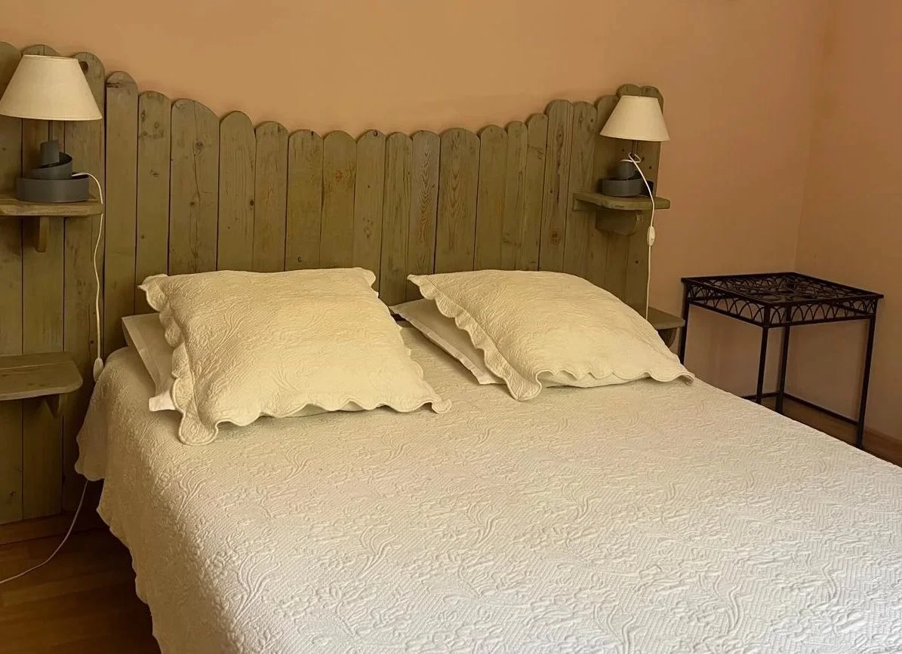
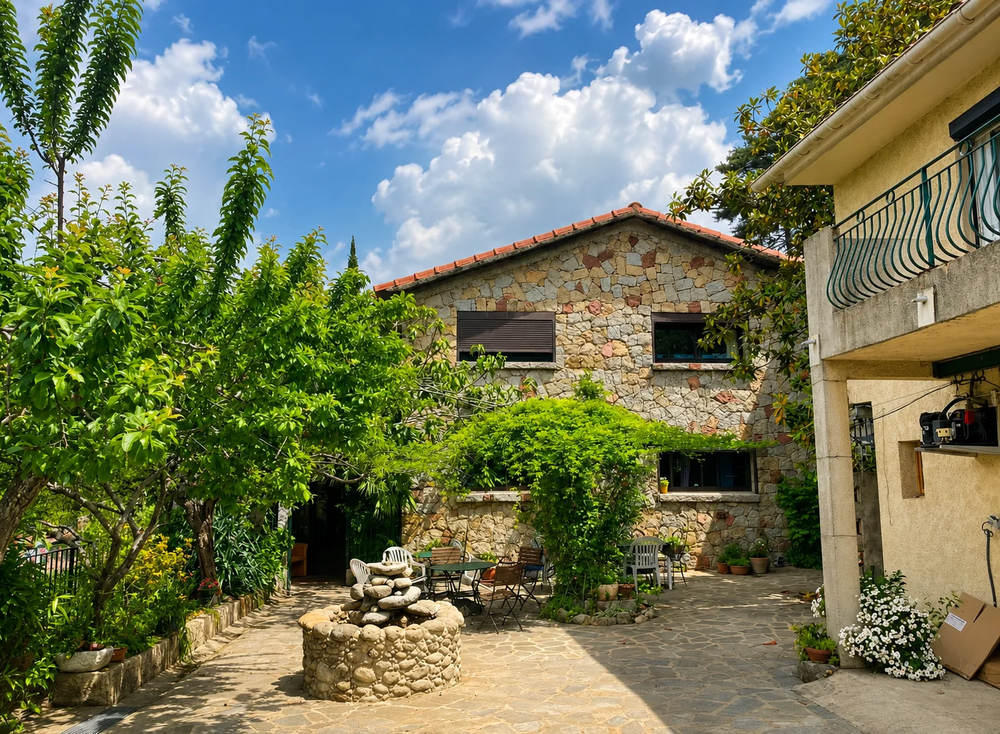
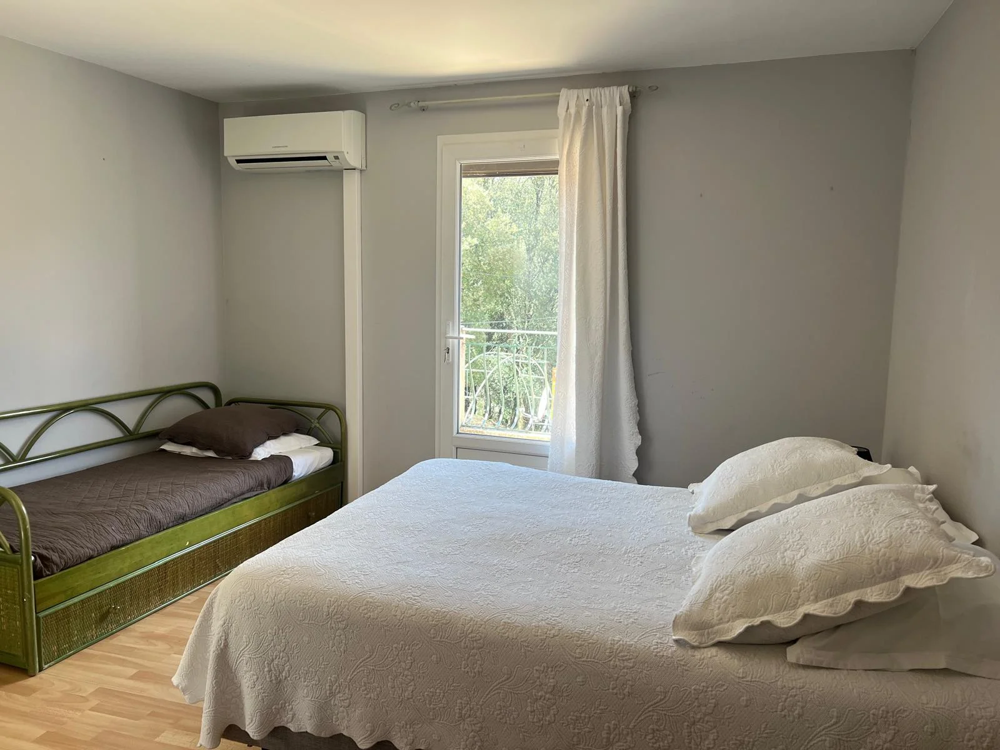
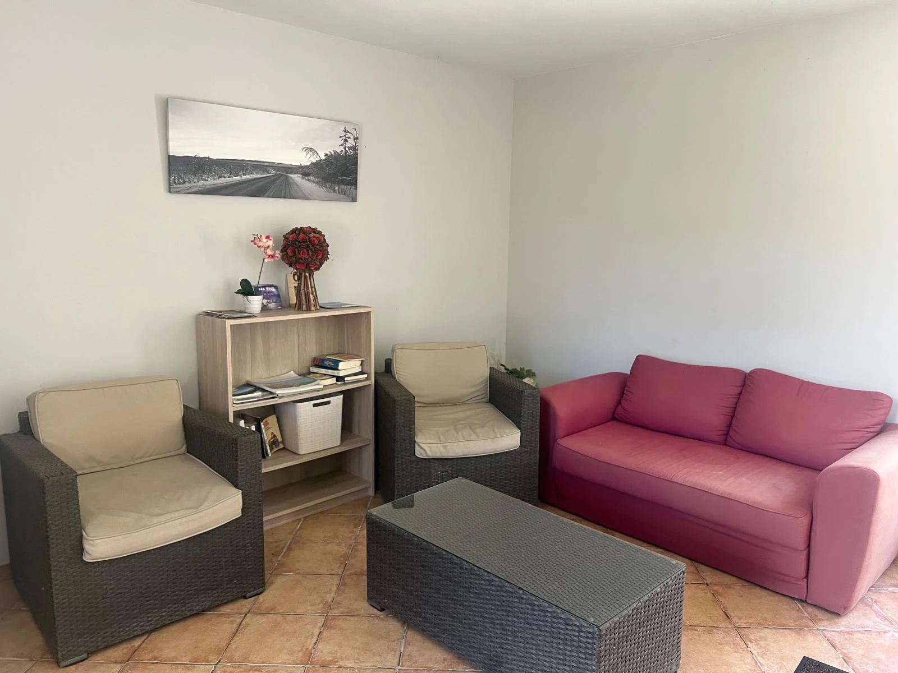
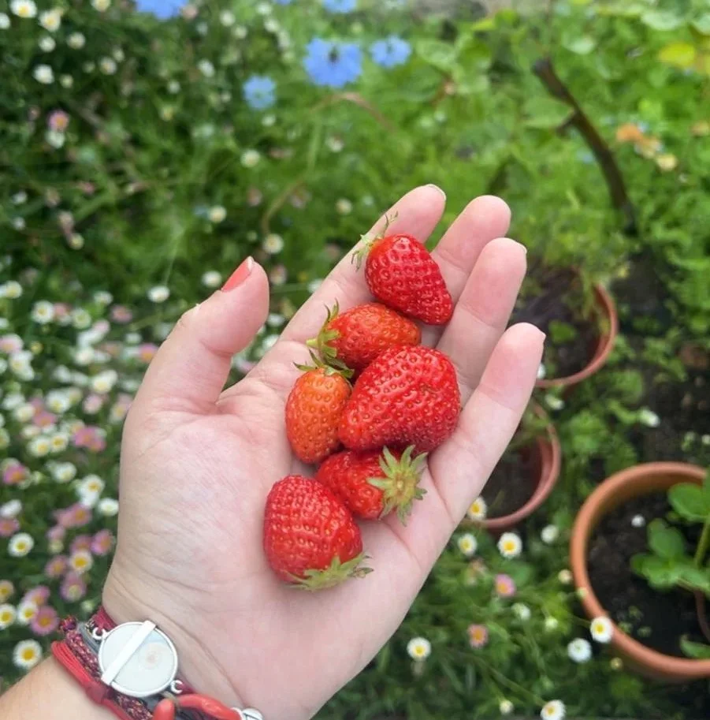
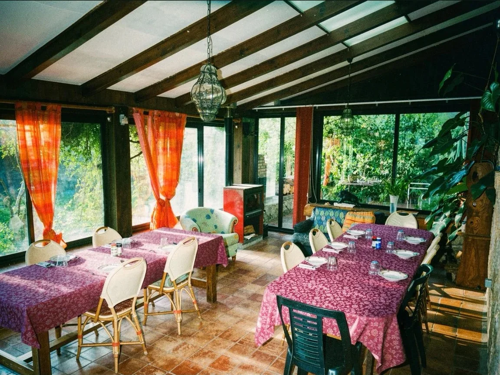
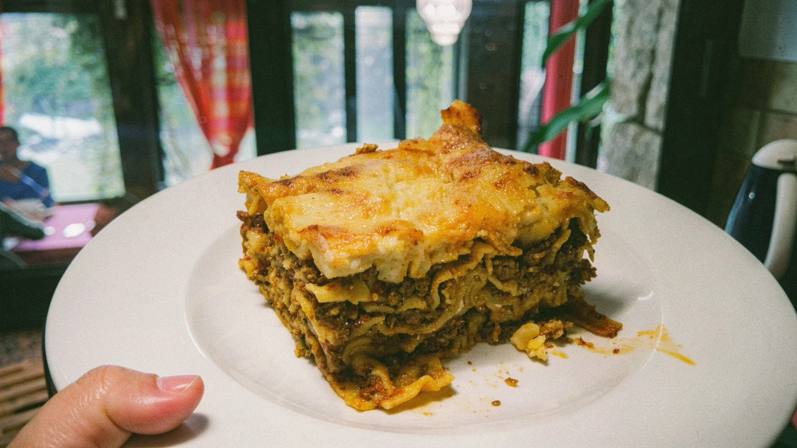
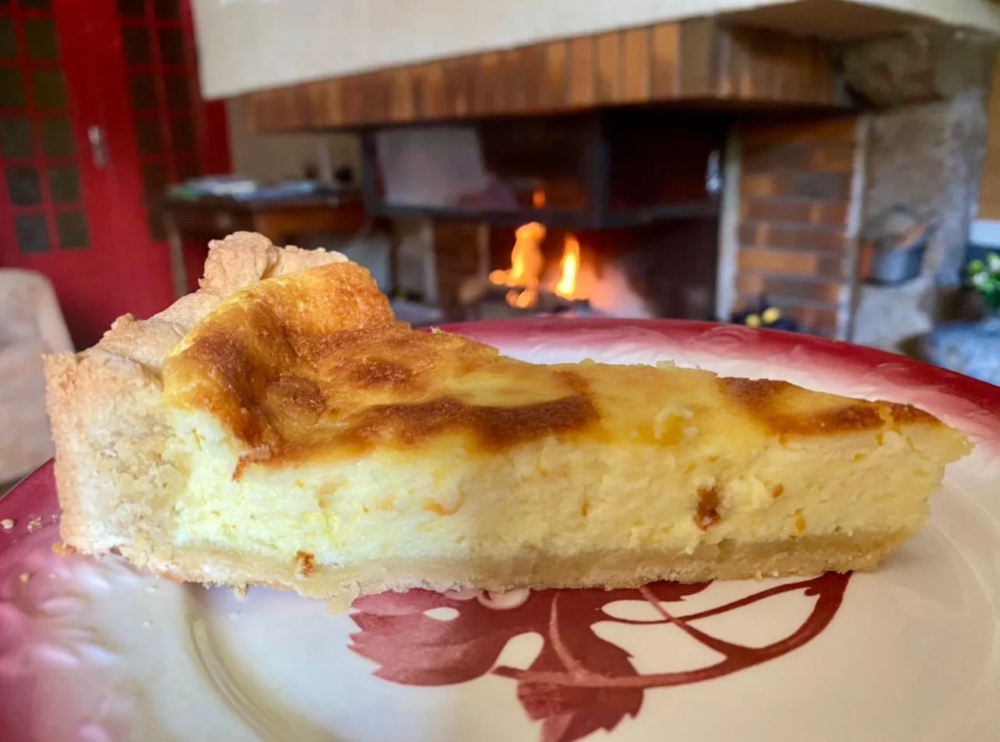

Chambre double
Chambre confortable pour deux personnes avec vue sur le jardin.
Chambres d'hôtes à Zicavo
Nature, calme et authenticité au cœur de la montagne corse.
Réserver un séjourBienvenue
Situé à Zicavo, Le Paradis vous accueille dans un cadre paisible, entre montagne, jardin et convivialité.

Séjourner

Chambre confortable pour deux personnes avec vue sur le jardin.

Chambre parentale avec la possibilité d'accueillir trois personnes.

Chambre spacieuse avec un salon séparé, idéale pour les familles.

Nature
Un jardin vivant, un potager généreux et un environnement naturel pour profiter pleinement du calme de Zicavo.
Convivialité
Selon les moments, des repas simples et chaleureux peuvent être proposés, avec des produits du jardin et du terroir corse.



Séjours sur mesure
Vous voyagez en groupe et souhaitez découvrir une Corse plus authentique, loin des itinéraires les plus fréquentés ?
Louise Pirany vous accueille au Paradis et vous propose des formules adaptées à votre projet : hébergement simple, demi-pension ou pension complète. Des tarifs personnalisés peuvent être étudiés selon la durée du séjour et le nombre de participants.
Grâce à sa situation centrale, Zicavo constitue un excellent point de départ pour explorer l'intérieur de la Corse : Alta Rocca, col de la Vaccia, col de Verde, vallée du Taravo, Ghisoni, Corte et de nombreux itinéraires de randonnée ou de découverte.
Contactez Louise Pirany pour lui présenter votre projet de séjour. Elle vous conseillera la formule la plus adaptée à votre groupe.
Réservation
Pour toute demande de séjour ou de renseignement, vous pouvez nous contacter directement.
Gîtes Le Paradis
Louise Pirany
📞 +33 (0)7 86 66 08 99
✉️ pirany.louise@orange.fr